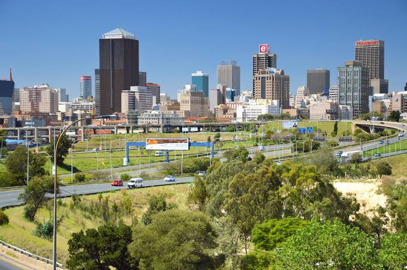

Johannesburg

Johannesburg, often called "Joburg" or "Jozi," is the largest city in
South Africa and a key economic hub in Africa. It was founded in 1886
following the discovery of gold on the Witwatersrand, sparking a gold
rush that transformed it from a small settlement into a booming city.
The city was initially a mining town, attracting fortune seekers from
around the world. Over time, Johannesburg became a center for commerce
and industry, eventually outgrowing its mining roots. It played a
significant role in the struggle against apartheid, with important
historical events like the Soweto Uprising of 1976 happening nearby.
Today, Johannesburg is a modern metropolis known for its vibrant
culture, diverse population, and economic significance. It is home to
the Johannesburg Stock Exchange (JSE), major businesses, and cultural
landmarks like the Apartheid Museum and Constitution Hill. Despite its
wealth, the city faces challenges such as inequality, housing shortages,
and crime, but it remains a symbol of resilience and opportunity in
South Africa.